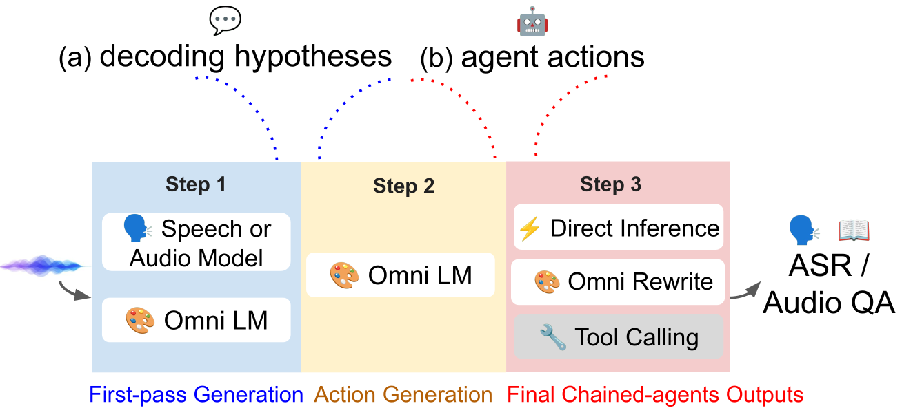
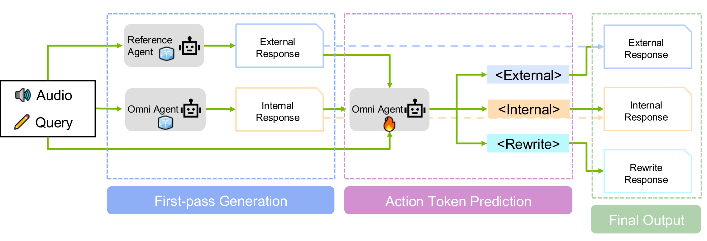

🤝🗣️ Speech-Hands
A Self-Reflection Voice Agentic Approach to Speech Recognition
and Audio Reasoning with Omni Perception
Paper under review
Agent integration with OpenClaw
Speech-Hands is a skill you drop into OpenClaw. The user speaks, OpenClaw hands the audio to the skill, and the skill picks one of three action tokens: trust itself, defer to a perception tool, or re-derive the answer from scratch. Four real samples below — two AudioQA and two ASR.
OpenClaw is an open-source personal assistant (MIT, 360k+ stars). The panels are a conceptual mock; the adapter code lives under integrations/openclaw/.
Hands
<internal><external><rewrite>Abstract
We introduce a voice-agentic framework that learns one critical omni-understanding skill: knowing when to trust itself versus when to consult external audio perception. Our work is motivated by a crucial yet counterintuitive finding: naively fine-tuning an omni-model on both speech recognition and external sound understanding tasks often degrades performance, as the model can be easily misled by noisy hypotheses. To address this, our framework, Speech-Hands, recasts the problem as an explicit self-reflection decision. This learnable reflection primitive proves effective in preventing the model from being derailed by flawed external candidates. We show that this agentic action mechanism generalizes naturally from speech recognition to complex, multiple-choice audio reasoning. Across the OpenASR leaderboard, Speech-Hands consistently outperforms strong baselines by 12.1% WER on seven benchmarks. The model also achieves 77.37% accuracy and high F1 on audio QA decisions, showing robust generalization and reliability across diverse audio question answering datasets.
Method

Self-reflection primitive
For every input, the model first picks one of three learnable tokens, then writes the answer. Each token is a different stance on the same trade-off:
<internal>
Trust self
The internal prediction is reliable; ignore the external candidate and answer directly from audio.
<external>
Defer
The external ASR / audio-reasoning model's top candidate is better; adopt it.
<rewrite>
Re-derive
Neither the internal nor the external prediction is correct; re-derive the answer using audio and the external candidate list as grounding context.

Results
ASR — WER (%) across 7 OpenASR benchmarks
Speech-Hands beats both single-system baselines (ASR / Omni-LMs) and cascaded GER. Paired with Parakeet, it gets the lowest average WER.
| Model | AMI | Tedlium | GigaSpeech | SPGISpeech | VoxPopuli | Libri-clean | Libri-other | avg. WER ↓ |
|---|---|---|---|---|---|---|---|---|
| ASR model or Omni-LLM | ||||||||
| Whisper-v2-large | 16.88 | 4.32 | 11.45 | 3.94 | 7.57 | 2.91 | 5.15 | 7.17 |
| Canary-1b-v2 | 19.80 | 4.78 | 11.66 | 3.08 | 6.35 | 1.73 | 3.17 | 7.22 |
| Parakeet-tdt-0.6b-v3 | 12.69 | 4.90 | 12.24 | 3.16 | 6.48 | 1.89 | 3.37 | 6.68 |
| Qwen2.5-Omni | 19.77 | 5.17 | 11.26 | 4.58 | 6.59 | 2.09 | 3.85 | 7.33 |
| Phi-4-MM | 11.69 | 2.90 | 9.78 | 3.13 | 5.93 | 1.68 | 3.83 | 6.14 |
| Gemini-2-Flash | 21.58 | 3.01 | 10.71 | 3.82 | 7.89 | 2.49 | 5.84 | 8.56 |
| GPT-4o-voice | 57.76 | 5.79 | 13.64 | 5.66 | 10.83 | 3.48 | 7.97 | 15.76 |
| Qwen2.5-Omni: Cascaded (GER) | ||||||||
| GER ⇒ Whisper-v2-large | 23.44 | 6.15 | 12.15 | 3.94 | 7.53 | 2.97 | 4.89 | 8.44 |
| GER ⇒ Canary | 24.58 | 6.38 | 12.43 | 4.02 | 7.72 | 3.05 | 5.01 | 8.74 |
| GER ⇒ Parakeet | 22.91 | 6.09 | 12.10 | 3.98 | 7.49 | 2.92 | 4.84 | 8.33 |
| Qwen2.5-Omni: Speech-Hands (parallel agentic) | ||||||||
| Speech-Hands ⇌ Whisper-v2 | 15.03 | 4.45 | 12.37 | 3.01 | 6.49 | 1.86 | 3.46 | 6.67 |
| Speech-Hands ⇌ Canary | 15.29 | 4.21 | 10.87 | 2.17 | 5.96 | 1.61 | 3.07 | 6.17 |
| Speech-Hands ⇌ Parakeet | 11.20 | 4.37 | 11.10 | 2.26 | 6.02 | 1.67 | 3.18 | 5.69 |
AudioQA — Accuracy (%) on DCASE 2025
Evaluated on bioacoustic QA, multi-sound-object soundscapes, and MMAU-style complex audio reasoning. Majority-sampled Speech-Hands gets the highest average accuracy.
| Model / Setting | Bio-acoustic | Soundscape | Complex QA | avg. Acc. ↑ |
|---|---|---|---|---|
| Audio LM or Omni Model | ||||
| Gemini-2-Flash | 42.03 | 46.34 | 59.89 | 56.61 |
| Qwen2.5-Omni | 47.32 | 56.32 | 59.89 | 57.87 |
| Audio Flamingo 3 | 71.88 | 57.31 | 81.26 | 74.49 |
| Qwen2.5-Omni Baselines | ||||
| + SFT with official training data | 78.13 | 34.65 | 76.61 | 63.13 |
| + GRPO with official training data | 78.09 | 39.43 | 79.12 | 65.54 |
| + GRPO with external audio data | 62.32 | 72.10 | 82.15 | 75.10 |
| GER ⇒ Audio Flamingo 3 (cascaded) | 76.29 | 52.02 | 77.48 | 68.93 |
| Qwen2.5-Omni: Speech-Hands (parallel agentic) | ||||
| Speech-Hands ⇌ AF3 — SFT | 67.86 | 58.29 | 83.34 | 75.75 |
| Speech-Hands ⇌ AF3 — SFT + majority sampling | 81.25 | 59.40 | 85.70 | 77.37 |
Action-token routing quality
How often each action token appears in training vs test, plus per-token test F1 on each OpenASR benchmark. <rewrite> is rare by design — it fires only when both internal and external are wrong.
| AMI | Tedlium | GigaSpeech | SPGISpeech | VoxPopuli | Libri-clean | Libri-other | |
|---|---|---|---|---|---|---|---|
| Training distribution | |||||||
<internal> | 67.95% | 86.48% | 87.76% | 96.25% | 93.73% | 98.96% | 98.96% |
<external> | 31.01% | 11.18% | 11.80% | 3.64% | 6.09% | 0.96% | 0.96% |
<rewrite> | 1.04% | 2.34% | 0.44% | 1.21% | 0.18% | 0.10% | 0.10% |
| Test distribution | |||||||
<internal> | 70.28% | 83.57% | 85.94% | 95.42% | 92.68% | 98.92% | 98.75% |
<external> | 26.91% | 15.12% | 12.41% | 3.81% | 6.47% | 0.98% | 1.08% |
<rewrite> | 2.27% | 1.31% | 1.65% | 0.77% | 0.85% | 0.10% | 0.17% |
| F1 on test | |||||||
<internal> F1 | 0.81 | 0.67 | 0.83 | 0.91 | 0.87 | 0.94 | 0.90 |
<external> F1 | 0.89 | 0.88 | 0.80 | 0.79 | 0.65 | 0.77 | 0.74 |
<rewrite> F1 | 0.39 | 0.28 | 0.08 | 0.43 | 0.33 | 0.00 | 0.00 |
Case Gallery
Audio QA
Seven DCASE 2025 AudioQA dev samples, grouped by the action token Speech-Hands picked. Play the audio; compare what Qwen2.5-Omni alone and Audio Flamingo 3 alone would say; see Speech-Hands' final answer.
Speech Recognition
Three OpenASR cases, one per action token. WER is normalized (Whisper-style), so "tomorrow" vs "to morrow" or missing apostrophes don't count. Each panel shows the reference, Qwen's first pass, the external ASR 5-best, and Speech-Hands' final.
BibTeX
@inproceedings{anonymous2026speechhands,
title = {Speech-Hands: A Self-Reflection Voice Agentic Approach to Speech
Recognition and Audio Reasoning with Omni Perception},
author = {Anonymous Authors},
booktitle = {Proceedings of the Annual Meeting of the Association for
Computational Linguistics (ACL)},
year = {2026}
}